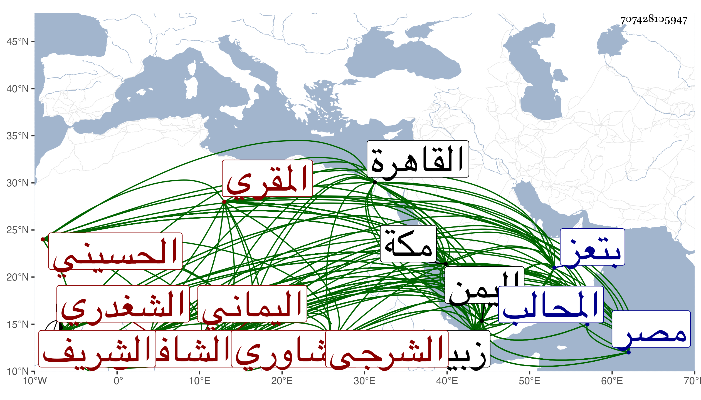

0902Sakhawi.DawLamic.ITO20230111-ara1.EIS1600.707428105947
Biography ID: 707428105947
914
إسماعيل بن أبي بكر بن عبد الله المقري بن إبراهيم بن علي بن عطية بن علي الشريف أبو محمد الشغدري بفتح المعجمة والمهملة بينهما معجمة ساكنة ثم راء قبل ياء النسب لقب لعلي الأعلى الشاوري الشرجي اليماني الحسيني نسبة لأبيات حسن من اليمن الشافعي الأسوي ويعرف بابن المقرئ وسمي الخزرجي جده عبد الله ابن محمد ولم يزد كما أن النفيس العلوي لم يزد أحدا بعد جده عبد الله واقتصر شيخنا في الأنباء على إسماعيل بن أبي بكر وفي المعجم قال إسماعيل بن محمد بن أبي بكر ، وتبعه فيه التقي بن قاضي شهبة وأصله من الشرجة من سواحل اليمن كما قاله شيخنا في أنبائه ، وقال غيره مما لا ينافيه أصله من بني شاور قبيلة تسكن جبال اليمن شرقي المحالب . ولد كما كتبه بخطه في منتصف جمادى الأولى سنة خمس وخمسين وسبعمائة ، وقال الجمال بن الخياط أنه رجع عنه وصح له أنه سنة أربع وخمسين وسبعمائة ، وقال الجمال بن الخياط أنه رجع عنه وصح له أنه سنة أربع وخمسين بأبيات حسين ونشأ بها ثم انتقل إلى زبيد وتفقه بالجمال الريمي شارح التنبيه فقرأ عليه المهذب وسمع غيره في آخرين تفقه بهم وأخذ العربية عن علماء وقته كمحمد ابن زكريا وعبد اللطيف الشرجي ومهر فيهما وفي غيرهما من العلوم وبرز في المنطوق والمفهوم ، وتعانى النظم فبرع فيه وأقبل عليه ملوك اليمن وصار له ثم حظ عند الخاص والعام . وولاه الأشرف تدريس المجاهدية بتعز والنظامية بزبيد فأفاد واستفاد وانتشر ذكره في سائر البلاد وولي أمر المحالب وعين للسفارة إلى الديار المصرية ثم تأخير ذلك لطمعه في الاستقرار في قضاء الأقضية بعد المجد الشيرازي اللغوي فلم يتم له مناه بل كان يرجوه في حياة المجد ويتحايل عليه بحيث أن المجد عمل للسلطان الأشرف كتابا أول كل سطر منه ألف واستعظمه السلطان فعمل الشرف كتابه الحسن الذي لم يسبق إلى مثاله المسمى عنوان الشرف والتزم أن تخرج من أوائله وأواخره وأواسطه علوم غير العلم الذي وضع الكتاب له وهو الفقه لكنه لم يتم في حياة الأشرف فقدم لولده الناصر ووقع عنده بل وعند سائر علماء عصره ببلده وغيرهما موقعا عظيما وأعجبوا به وهو مشتمل مع الفقه على نحو وتاريخ وعروض وقواف . وكذا اختصر الروضة وسماه الروض باختصار اسمها أيضا والحاوي الصغير وسماه الإرشاد وشرحه في مجلدين وعمل بديعيه على نمط بديعية الصفي الموصلي وقصيدة استنبط فيها معان كثيرة تزيد على ألف ألف معني إلى غير ذلك نظما ونثرا ونظمه كثير التجنيس والبديع حسن الترتيب والترصيع حتى أن النفيس العلوي قال أنه سمع باليمن كلا من شيخنا وشعبان الآثاري يقول ما أعلم اعلم ولا أفصح في الشعر منه وهو يربي على أبي الطيب المتنبي وقال هو الفقيه الإمام العالم ذو الفهم الثاقب والرأي الصائب بهاء الفقهاء نور العلماء علما وعملا وصاحب الحال المرضي قولا وفعلا المعتكف على التصنيف والتحرير والمقبل عليه ملوك اليمن في الرأي والتدبير له الحظوظ التامه عند الخاصة والعامة وهو بذلك جدير وحقيق ، وقال الموفق الخزرجي إنه كان فقيها محققا باحثا مدققا مشاركا في كثير من العلوم والاشتغال بالمنثور والمنظوم أن نظم أعجب وأعجز وإن نثر أجاد وأوجز فهو المبرز على أترابه والمقدم على أقرانه وأصحابه وكان يقول الشعر الحسن مع كراهته أن ينسب إليه قلت حتى أنه قال :
| بعين الشعر أبصرني أناس | فلما ساءني أخرجت عينه |
| خروجا بعد راء كان رأبى | فصار الشعر مني الشر عينه |
ثم قال الخزرجي ويتعانى في غالبه التجنيس واستنباط المعاني الغريبة بحيث يأتي بما يعجز عنه غيره من الشعراء في أحسن وضع وأسهل تركيب وامتدح الأشرف إسماعيل بن العباس وغيره ولم يزل الأشرف يلحظه ويقدمه وهو جدير بذلك فقد كان غاية في الذكاء والفهم لا يوجد له نظير ، وله تصانيف في النحو والشرع والأدب وغير ذلك ، وقد قرأ على ديوان المتنبي فاستفدت بفهمه وذكائه أكثر مما استفاد مني وكنت أحب أن لو أتمه لكن حصل عائق . وقال شيخنا في أنبائه أنه مهر في الفقه والعربية والأدب وجمع كتابا في الفقه سماه عنوان الشرف يشتمل على أربعة علوم غير الفقه يخرج من رموز في المتن عجيب الوضع اجتمعت به في سنة ثمانمائة ثم في سنة ست في كل مرة يحصل لي منه الود الزائد والإقبال وتنقلت به الأحوال وولى إمرة بعض البلاد في دولة الأشرف وناله من الناصر جائحة تارة وإقبال أخرى ، وكان يتشوق لولاية القضاء بتلك البلاد فلم يتفق له ومن نظمه بديعية التزم أن يكون في كل بيت تورية مع التورية باسم النوع البديعي وله مسائل وفضائل وعمل مرة ما يتفرع من الخلاف في مسألة الماء المشمس فبلغت آلافاوله شرح مختصر الحاوي في مجلدين ، وحج سنة بضع عشرة وأسمع كثيرا من شعره بمكة وترجمه في استدعاء بأنه إمام فاضل رئيس كامل له خصوصية بالسلطان وولى عدة ولايات دون قدره وله تصانيف وحذق تام ونظم مليح إلى الغاية ما رأيت باليمن أذكى منه . وقال في معجمه استفدت منه الكثير وسمع مني كتابي ضوء الشهاب المنتخب من نظمي وأحسن السفارة لي عند السلطان وطارحى بأبيات رائية ، وحج وحدث بشيء من شعره وعين للسفارة إلى القاهرة ثم تأخر ذلك وكان يطمع في ولاية القضاء فلم يتفق له وصنف عنوان الشرف وهو مختصر في الفقه أودعه علوما أخرى تستخرج من أوائل السطور وأواخرها لم يسبق إلى مثله وأجاز لأولادي في سنة إحدى وعشرين وثمانمائة وقال ابن قاضي شهبة في طبقاته قال لي بعض المتأخرين شامخ العرنين في الحسب ومنقطع القرين في علوم الأدب تصرف للأشرف صاحب اليمن في الأعمال الجليلة وناظر أتباع ابن عربي فعميت عليه الأبصار ودمغهم بأبلغ حجة في الأفكار وله فيهم غرر القصائد تشير إلى تنزيه الصمد الواحد وله المدح الرائق والأدب الفائق إلى أن قال ترشح لقضاء الأقضية بعد القاضي مجد الدين ودرس بمدارس منسوبة إلى ملوك قطره ولم يزل محترما إلى أن توفي في سنة سبع وثلاثين في رجب منها ظنا يعني بزبيد ، وقال غيره أنه حج في سنة سبع وثمانمائة وحدث فيها ببديعيته في سنة اثنتين وعشرين ولقي فيها الولي العراقي بمكة وقال له أنت القائل :
| قل للشهاب بن علي بن حجر | سور على مودتي من الغير |
| فسور ودي فيك قد بنيته | من الصفا والمروتين والحجر |
فقال نعم قال فأنشدنيهما ففعل وفي سنة ثمان وعشرين وأنشدنا عنه الموفق الآبي قصيدة سمعها منه أولها :
| إلى كم تمادى في غرور وغفلة | وكم هكذا نوم إلى غير يقظة |
والتقى بن فهد ما أثبته في معجمه وكذا عندي من نظمه أشياء وهو شائع فلا نطيل به وله كتاب في الرد على الطائفة العربية وأشياء في ذلك منظومة ومنثورة وآخر من علمته من علماء أصحابه التقي عمر الفتي المتوفي في سنة سبع وثمانين وكان يرجح مختصر الروضة للأصفوني على الروض لشيخه لعدم تقيده فيه بلفظ الأصل الذي قد يؤدي لتباين ظاهر بخلاف الأصفوني فهو متقيد بلفظ الأصل ولذا عمل كتابا سماه الإلهام لما في الروض من الأوهام وشرح الروض شرحا بليغا قاضي الشافعية في وقتنا ومحقق الوقت الزين زكريا الأنصاري وقد ختم تحقيقه بين يديه في أوائل سنة اثنتين وتسعين وكذا شرحه الشيخ شمس الدين بن سولة الدمياطي شرحا مطولا بل اختصر الروض نفسه وشرح الإرشاد للعلامة المحقق الكمال بن أبي شريف المقدسي وتداوله الفضلاء والعلامة الشمس الجوجري ، وأولهما أتقنهما وأخصرهما نفع الله بجميع ذلك . وقال العفيف الناشري . وهو ممن أخذ عنه : مدقق وقته في العلوم وأشعر أهل زمانه قال وسمعت طلبته يذكرون عنه كثرة العبادة والذكر وقال أيضا في ترجمة عمه الموفق إن صاحب الترجمة كان غاية في التدقيق إذا غاص في مسئلة وبحث فيها اطلع فيها على ما لم يدركه غيره لكون فهمه ثاقبا ورأيه وبحثه صائبا حتى أنه حرر كثيرا مما اختلف فيه أتم تحرير ومع ذلك فكان غاية في النسيان قيل أنه لا يذكر ما كان في أول يومه ومن أعجب ما يحكى في نسيانه أنه نسى مرة ألف دينار بزنبيل ثم وقع عليه بعد مدة اتفاقا فتذكره وحاله لا يقتضي نسيان دون هذا القدر فضلا عنه انتهى . وذكره المقريزي في عقوده ونسبه ابن أبي بكر بن إبراهيم بن عبد الله وساق من نظمه أشياء وترجمته تحتمل كراريس رحمه الله تعالى .
